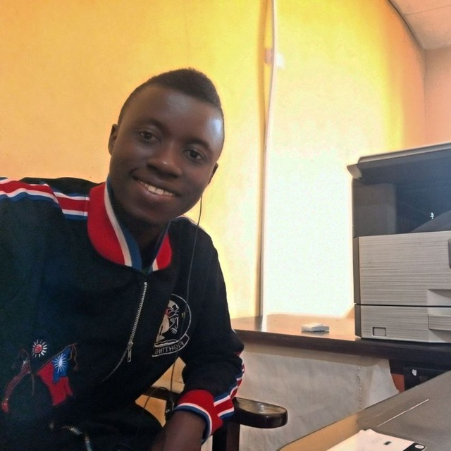

MY PROFILE

Name:
CHIKEZIE SUCCESS C.
My Introduction
I am a principled individual, fun filled, an introvert who doesn't like prying into other people's affairs, a goal getter, a wonderful mediator and enjoy being optimistic.
My Goals
With my background in visual design, and brand strategy, I believe after completing this programm I would be able to contribute positively to solve human related prolems in this field. also liberate myself from the trenches
EDUCATIONAL BACKGROUND üìñ
Front End Engineering
-
Altschool Africal School of Engineering - Nigeria
2022 - 2022
Graphics Design | UI/UX Design
-
Sid Hustle Internship - Nigeria
2022 - 2022
Agricultural Economics
-
Federal University of Technology Owerri - Nigeria
2016 - 2022
Graphics Design, Advanced Excel
-
FIO ICT Owerri - Nigeria
2010 - 2011
WORK EXPERIENCE ⚒
Electrical Engineer
-
Tontechs Electricals - Nigeria
2011 - 2023
Desktop Support Technician
-
FIO ICT - Nigeria
2013 - 2014
Graphics Designer
-
Excellent Printing and Computer Services Orlu - Imo State
Nigeria
2014 - 2016
Meter Engineer
-
Enugu Electricity Distribution Plc - Nigeria
2016 - Till Date
HOBBIES üí¢
- Reading - (motivational & inspirational books)
-
Travelling
- Listening to Music - (inspirational & rap)
- Sports & Games - (visual games)
OTHER SKILLS 〽️
-
soft skills
Self confidence, Adaptability/flexibility, Problem solving, Time Management, Ability to leran and Emotional intelligence. -
hard skills
Design, Technical, computer, Presentation, Project Management, and Micro soft skills.